Character Encoding (Part 1): Before Unicode
Before we can truly understand Unicode, we must first look at the digital landscape that preceded it—a fragmented world of incompatible encodings, garbled text, and endless formatting headaches. This is the story of how the computing industry attempted to teach machines to write in every human language, one ad-hoc standard at a time.
ASCII: The Foundation of Everything
In the early 1960s, computers from different manufacturers were virtually unable to communicate. Every hardware vendor devised proprietary schemes to map characters to binary values, resulting in digital chaos. The industry desperately needed a unified standard.
In 1963, the American Standards Association (ASA, now ANSI) published the first iteration of the American Standard Code for Information Interchange, universally known as ASCII. Its design was brilliantly straightforward: it utilized a 7-bit binary structure to represent characters, yielding 128 unique values (numbered 0 through 127).
These 128 indices were allocated as follows:
- Control Characters (0–31 and 127): Non-printable commands such as line feed (newline), carriage return, tab, bell, and the null terminator.
- Punctuation and Symbols: Standard spacing, numerals 0–9, and common mathematical and punctuation symbols.
- English Alphabets: Uppercase and lowercase English letters (A–Z and a–z).
While ASCII was perfectly sufficient for English, its real triumph was its clean design. It was so robust that virtually every major encoding standard that followed—including Unicode—preserved ASCII as its foundational subset. To this day, the capital letter 'A' is represented by the byte 65 (0x41) in UTF-8, UTF-16, and UTF-32. That is a remarkable sixty-year legacy of backward compatibility.
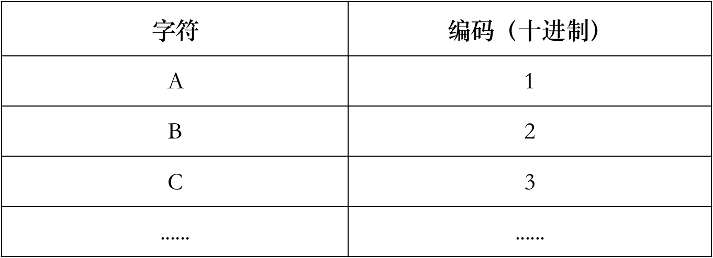
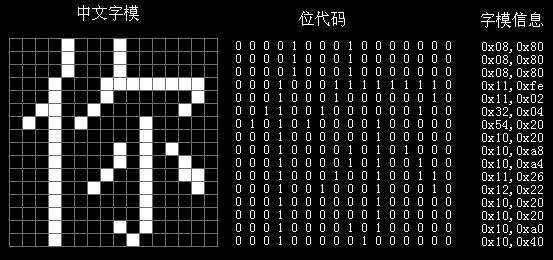
A 16x16 pixel matrix used to display a character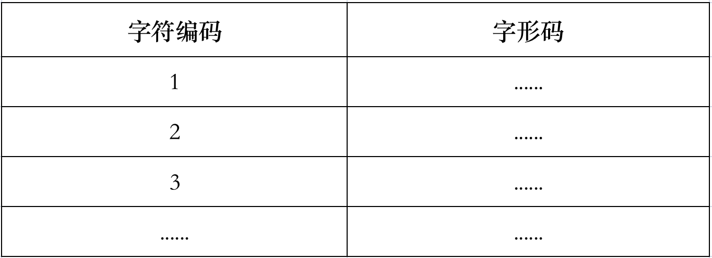
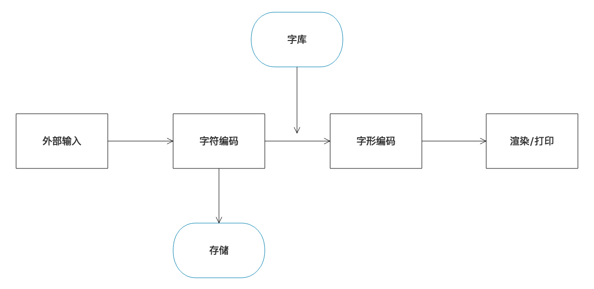
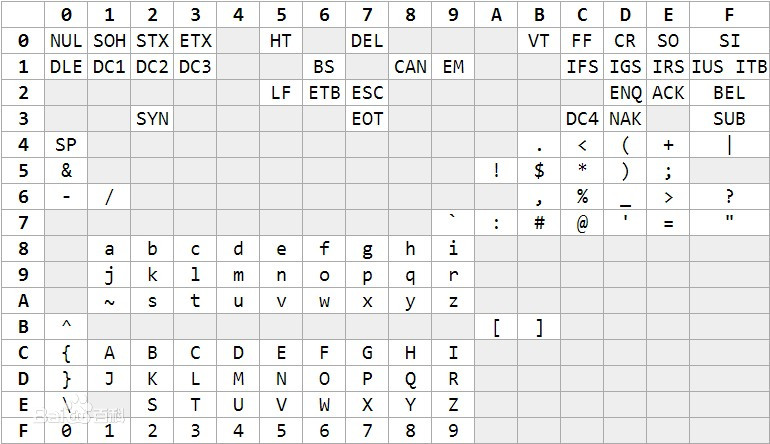
EBCDIC encoding table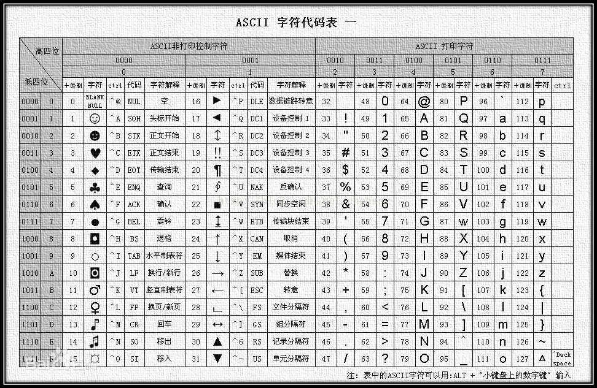
ASCII encoding table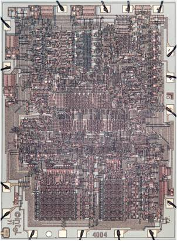
The first microprocessor: Intel 4004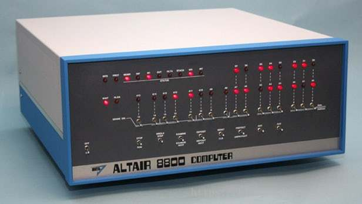
The Altair 8800, the first minicomputer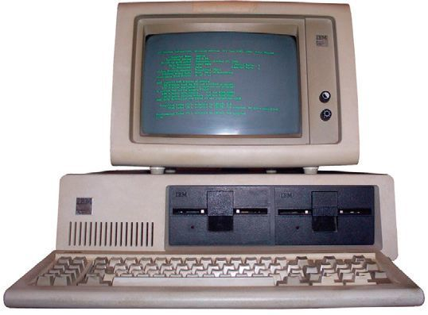
The IBM PC, released in 1981However, English is just one of many global languages. How did computing adapt to the rest of the world?
ISO-8859: Extending ASCII for Europe
While standard ASCII relies on a 7-bit space, computers process data in 8-bit bytes. This left the high-order 8th bit completely unused, which seemed like an inefficient use of resources. Engineers realized they could use the remaining 128 empty slots (values 128 through 255) to support additional characters.
This insight led to the creation of the ISO 8859 standard series. Published between 1986 and 1992, the ISO 8859 family defined a collection of 8-bit encodings, each tailored to a specific regional language group:
- ISO 8859-1 (Latin-1): Designed for Western European languages such as French, German, Spanish, and Portuguese, introducing essential diacritics and accented characters (e.g., é, ü, ñ).
- ISO 8859-2 (Latin-2): Structured for Central and Eastern European languages, including Polish, Czech, Hungarian, and Romanian.
- ISO 8859-5 (Cyrillic): Geared toward Cyrillic-script languages like Russian, Bulgarian, and Serbian.
- ISO 8859-6 (Arabic): Created to encode Arabic text.
- ISO 8859-7 (Greek): Tailored for the Greek alphabet.
- ISO 8859-8 (Hebrew): Built for the Hebrew script.
- ISO 8859-15 (Latin-9): A modern revision of Latin-1 that added the Euro currency symbol (€) and corrected several missing French and Finnish characters.
A key property of all ISO 8859 standards is that they are strictly backward-compatible with ASCII. The lower 128 values (0–127) are completely identical to standard ASCII; only the upper region (128–255) swaps definitions depending on the selected code page.
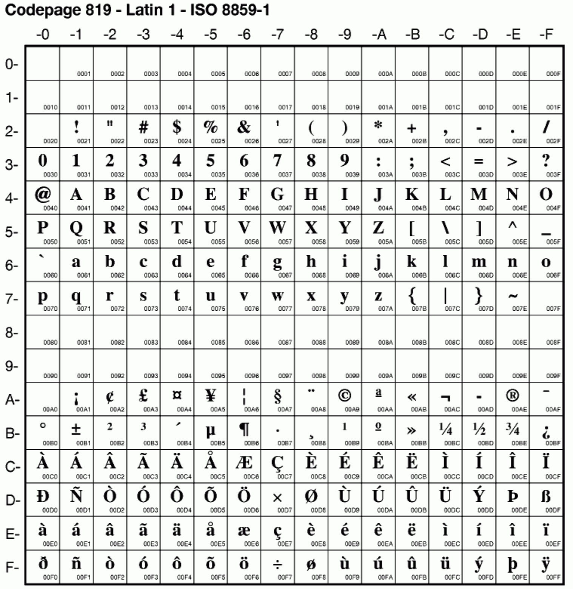
ISO/IEC 8859-1 character set, note compatibility with ASCII below 007F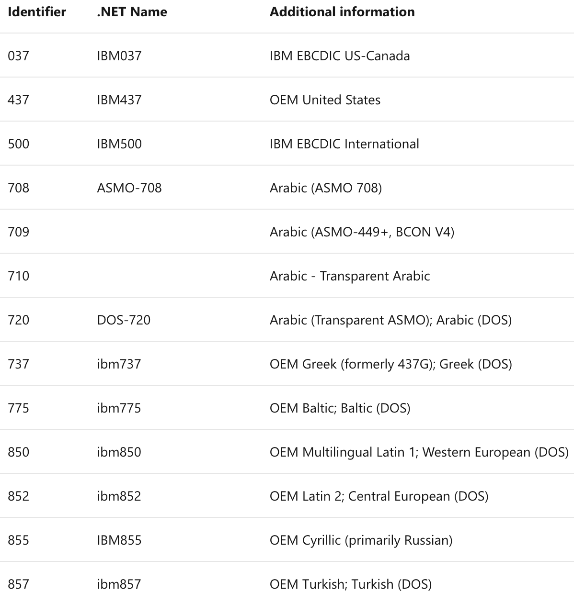
Microsoft's support for IBM code pages (partial)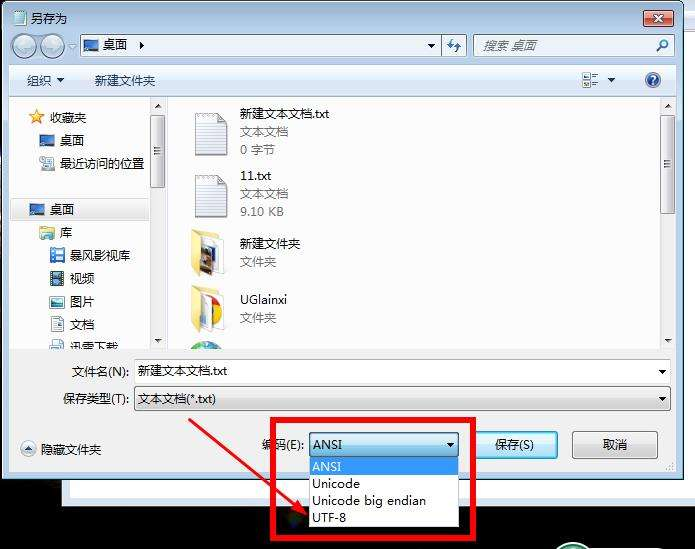
The ANSI encoding option in Windows NotepadWhile this was a clever workaround, it had a fatal architectural flaw: a single file could only support one region's characters at a time. A document written in Latin-1 (such as French) could not natively include Cyrillic (Russian) characters. If you opened a Latin-1 text file with a Cyrillic decoder, the accented characters turned into garbled, unreadable nonsense.
Enter the East Asian Character Sets
While European languages could manage with 8-bit, single-byte extensions, East Asian writing systems—Chinese, Japanese, and Korean (CJK)—contain tens of thousands of unique ideographs. An 8-bit space (capped at 256 entries) was mathematically incapable of representing them. The industry had to pivot to multi-byte encoding architectures.
GB 2312: Simplified Chinese
In 1980, China introduced GB 2312 (GuoBiao, or "National Standard"), the first standard to achieve widespread adoption for Simplified Chinese. It cataloged 6,763 Hanzi characters, covering more than 99% of everyday written Chinese.
To accommodate this large character set, GB 2312 implemented a two-byte encoding scheme:
- Bytes falling in the standard 0x00–0x7F range are interpreted as standard ASCII, maintaining native backward compatibility.
- Bytes in the high-range 0xA1–0xFE bracket act as markers signaling the start of a two-byte Chinese character. The first byte represents the "high byte" (lead byte) and the second represent the "low byte" (trail byte).
This design was highly effective: standard ASCII English text remained readable by older programs, while Chinese characters were easily identified by checking if the high-order bit of a byte was set.
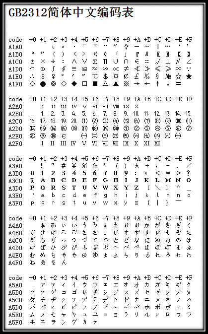
GB 2312 encoding table (partial)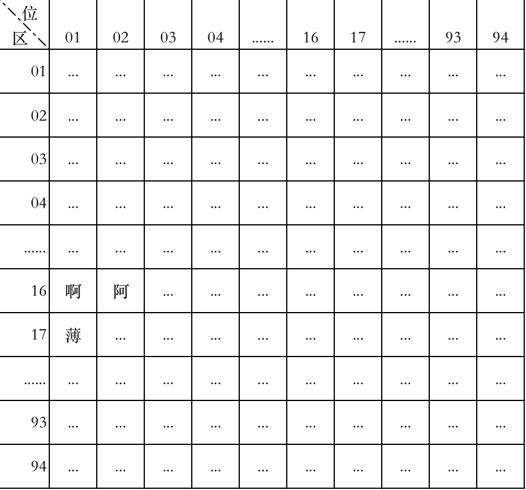
Quwei matrix diagram. Note: zone and position numbers are in decimal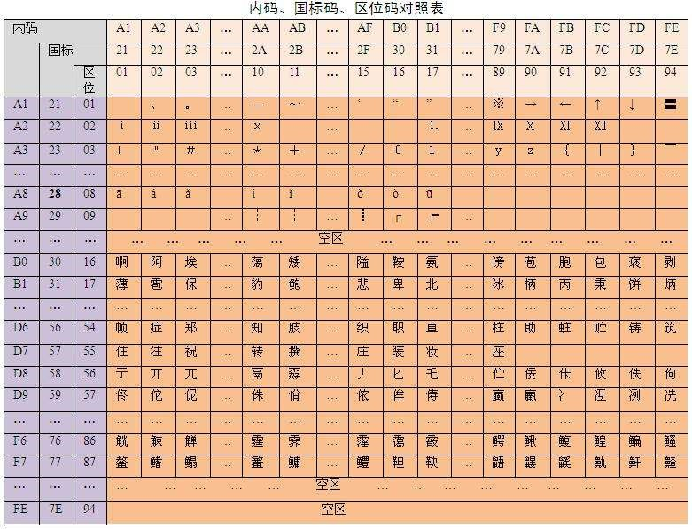
Comparison of original quwei code, national standard code, and internal codeLater, the Chinese government expanded GB 2312 into GBK (1995), which incorporated Traditional Chinese characters and minority scripts, expanding the vocabulary to over 20,000 characters. This was eventually succeeded by the mandatory GB 18030 (2000) standard, which supports more than 70,000 characters using a sophisticated variable-width scheme (spanning one, two, or four bytes).
Big5: Traditional Chinese
In Taiwan and Hong Kong, a competing standard emerged: Big5 (1984), which defined 13,060 Traditional Chinese characters. Much like GB 2312, Big5 leveraged a double-byte structure and remained compatible with the standard ASCII range.
However, Big5 suffered from a notorious structural defect: certain values used as the second byte (the trail byte) overlapped with ASCII control characters and special symbols, such as the backslash (\) and pipe (|). This caused serious parsing bugs in database queries and compilers, which frequently mistook part of a Chinese character for code syntax — an issue that plagued web development until the arrival of Unicode.
Shift JIS and EUC-JP: Japanese
Japan developed several parallel standards to solve character representation, with the two most prominent being:
- Shift JIS (1982): A double-byte encoding that neatly mapped the JIS X 0208 character set (containing roughly 6,879 characters) alongside half-width katakana. By shifting byte ranges, it avoided overlapping with standard ASCII lead bytes. Shift JIS remains common in legacy Japanese enterprise systems and older desktop environments.
- EUC-JP (Extended Unix Code): A popular scheme on Unix-based systems where ASCII remains a single byte, JIS X 0208 characters take up two bytes (where both bytes fall within 0xA1–0xFE), and half-width katakana occupy a two-byte sequence prefixed by 0x8E.
EUC-KR: Korean
Korea adopted EUC-KR, which maps the KS X 1001 character set (encompassing approximately 2,350 common Hangul syllables and 4,888 Hanja characters). Similar to other EUC variants, it relies on a two-byte structure for native characters and a single byte for ASCII.
While alternative systems like JOHAB and ISO 2022-KR were introduced, EUC-KR remained the dominant standard for Korean web pages and databases.
The Global Chaos of Mismatched Encodings
By the dawn of the 1990s, the digital world was a patchwork of dozens of incompatible, regional character encodings. Because there was no centralized mapping, the same sequence of raw bytes would be interpreted in wildly different ways depending on which encoding standard a program assumed.
For example, the byte 0xB0 represents the degree symbol (°) under ISO 8859-1. However, under GB 2312, that same 0xB0 represents the lead byte of a Simplified Chinese character. In a Shift JIS environment, it mapped to an entirely different half-width katakana character.
This incompatibility gave rise to mojibake (a Japanese loanword meaning "garbled character transformation"). When an application loaded a text file using an incorrect character set, characters were mapped to the wrong glyphs, turning coherent writing into unreadable gibberish (e.g., displaying èÂî instead of proper words).
This issue was particularly severe during the early days of the World Wide Web. Early email protocols, web pages, and Usenet newsgroups rarely announced their encoding formats in their headers, forcing web browsers to guess. When the browser guessed wrong, users were presented with walls of nonsense characters.
To mitigate this, software engineers had to build complex encoding detection heuristics — algorithms that analyzed byte frequency and patterns to guess the most likely source character set. These heuristics were inherently fragile and highly localized. An algorithm tuned for English might easily misclassify a French document as Turkish, compounding the user's frustration.
The Need for a Universal Standard
As the internet connected the globe and international trade became standard, this digital Tower of Babel became completely untenable. The global software industry needed a single, unified character set that could map every written character in human history — and do it without conflicts, overlaps, or regional assumptions.
That universal solution was Unicode.
In the next article, we will examine the modern character encoding model — the theoretical blueprint that explains how Unicode cleanly decouples character definitions from actual binary storage on disk.